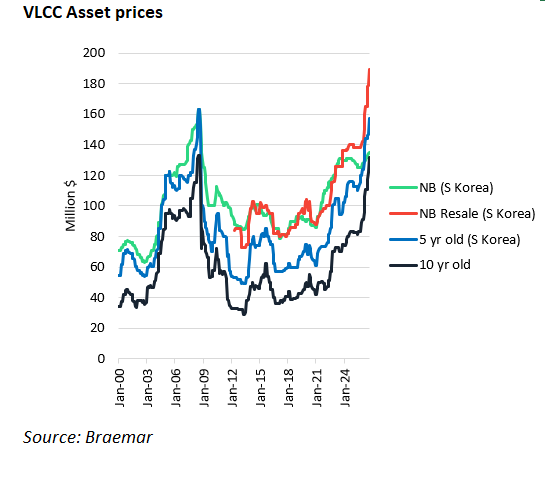
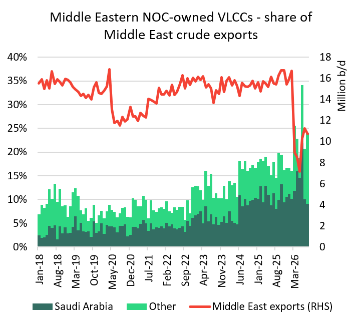

Where does this leave the independent owners?
The dramatic increase in risk in getting crude out of chokepoints in the Middle East has accelerated the dominance of Middle East National Oil Companies in the VLCC sector. All things being equal, this does not bode well for independent owners.
The Houthis’ seizure of the port of Mocha in the Red Sea is the latest escalation in a conflict that has already seen around 50 tankers, including 20 VLCCs, attacked since the US-Iran war began. As risks to commercial shipping rise, Middle Eastern producers are concluding that transport cannot be outsourced to risk-averse third parties. Faced with few options to get exports out, Middle Eastern national oil companies (NOCs) are paying up to acquire ships.
In our opinion, even if the current disruption in the Middle East eases, NOCs are unlikely to divest their newly acquired ships. Instead, they will aim to hedge against future export disruption. This may usher in a longer-lasting change to the structure of the Mideast tanker market, transferring cargoes away from independent shipowners and towards producers’ fleets. Ultimately, we could see a less liquid and competitive Middle East freight market and a lower ceiling on earnings.
Scramble for prompt tonnage reflected in asset prices
Mideast NOCs’ scramble for ships with prompt delivery is sending VLCC asset prices soaring. This premium for prompt ships was seen in record-smashing prices paid on two recent VLCC resales reportedly linked to Iraq’s national oil company. A VLCC with very prompt delivery was sold last week for $200mn, and $169mn was reportedly paid for a VLCC with October delivery. ADNOC has acquired six VLCCs since late July.
We currently assess a 5-yr old South Korea-built VLCC at $157mn and a 10-yr old VLCC at $132mn, compared to $135mn for a South Korea newbuild. Today, our brokers say these figures are likely undervalued, with 5-yr old asset prices likely closer to $170mn and 10-yr-old assets likely near $150mn. Resale and 5-yr asset prices outstripping a newbuild asset that can deliver in three to four years’ time is not uncommon in a strong earnings environment. But this marks the first time we have seen 10-yr old assets outstripping newbuild prices.

How has Mideast NOC exposure to shipping evolved?
The Mideast NOCs’ desire to have physical freight exposure is not new. Bahri evolved into one of the leading VLCC owners through its fleet expansion over the past decade, especially since 2024. ADNOC acquired an 80% stake in Navig8 in 2025, allowing it to expand its fleet. Now, with Hormuz and Red Sea disruption, control without ownership is no longer adequate for Middle Eastern producers, given calling in a high-risk zone is ultimately dependent on the owner’s risk appetite.
Middle East NOC-owned VLCCs’ share of regional VLCC exports rose from 12% (1.8m b/d) in 2023 to 17% (2.8m b/d) in 2025 and has averaged 24% (2.3m b/d) since the US-Iran war began. While overall Middle East VLCC exports have fallen 40% since the conflict began, volumes on NOC-owned ships are down just 18%, reflecting higher Saudi Red Sea exports, strong Iranian exports early in the war, and the use of NOC-owned tankers on Hormuz-Gulf of Oman shuttle runs. Even with UAE-controlled tonnage tied up on time charter and Iranian exports curtailed since the US blockade began in mid-July, NOC-owned fleets have been busy.

Source: Braemar and Vortexa
But what happens once disruption eases and the need for shuttle services out of Hormuz ends? Saudi Arabia’s fleet of 49-owned VLCCs and Kuwait’s fleet of 11-owned VLCCs is enough to cover roughly a third of the respective country’s full export programme on pre-Iran conflict trade routing. The 14 VLCCs owned by the UAE, including its recent acquisitions, would cover roughly 22% of its exports.
We recognise that full export coverage by Mideast NOCs is unlikely to be the goal. NOCs may seek enough fleet ownership to guarantee an acceptable level of export coverage in case of future disruption, especially before bypass pipeline projects are completed. Owning ships is a hedge against the high cost of delivering oil to consumers during disruption - a cost that producers would otherwise have to absorb by discounting their crude price.
Owning ships could also offer NOCs other advantages. Shipping markets have been strong in recent years, with owners enjoying record profits. In strong markets, NOCs can use their ships to trade on the spot market and fall back on their own export programme in a weak market.
Where about independent owners?
Any barrel of NOC crude carried on its own ships is a barrel less for independent owners. As expanded NOC fleets carry their own programme, there will be fewer cargoes in the market, possibly leading to an overall reduction in liquidity and visibility in the Middle East spot market.
Furthermore, refiners in East Asia tend to use their own VLCCs or those serving state-owned interests where possible. Vortexa data shows that roughly 34% of VLCC cargoes from the Mideast (excl. Iran) arriving in Japan/South Korea/China in 2025 were controlled by these players. They may be more likely than independent owners to accept the last done rate, given they are representing the receiver’s interests. An independent owner, interested in spot cargoes and aiming to increase the prevailing market rate, will generally lose out to both NOCs and companies representing East Asia importers.
Given these factors, pricing power for independent owners may be reduced if rates have an overall lower ceiling. But unless Mideast producers embark on the unlikely course of complete export self-sufficiency, the sheer scale of global crude supply needing transporting from the Middle East is immense- over 40% of global crude exports came from the region pre-war. Without rapid fleet acquisition by NOCs – currently difficult given the lack of prompt tonnage – independent owners are unlikely to be pushed out completely. But this could change in the coming years, given the crude tanker fleet is set to expand rapidly thanks to the massive VLCC and Suezmax orderbook.
However, a loss in liquidity in the Middle East spot market could be partially mitigated by increases in global crude tonne-miles. Some East Asian importers that were previously heavily reliant on the Middle East are likely to diversify their crude supply away from the Middle East. The likely growth in Atlantic to Pacific tonne-mile demand could offer opportunities for independent owners displaced from Middle East trade.